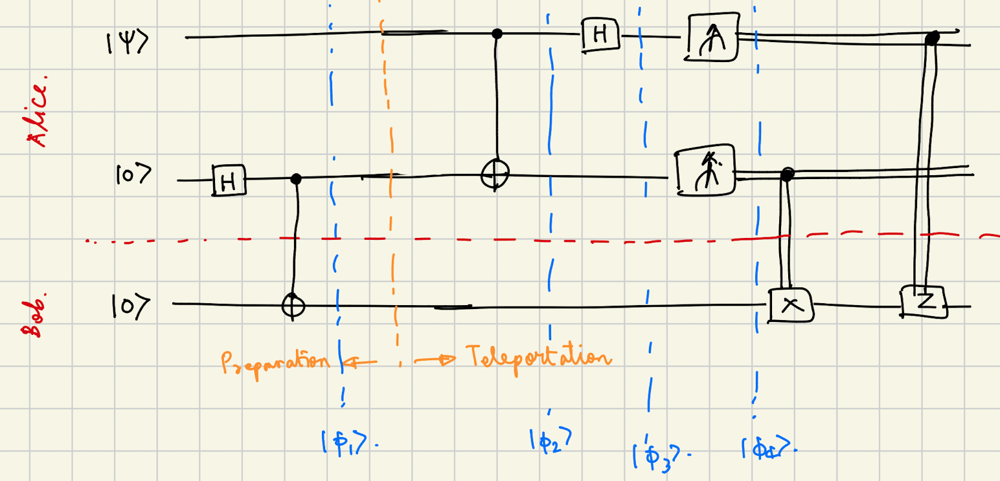
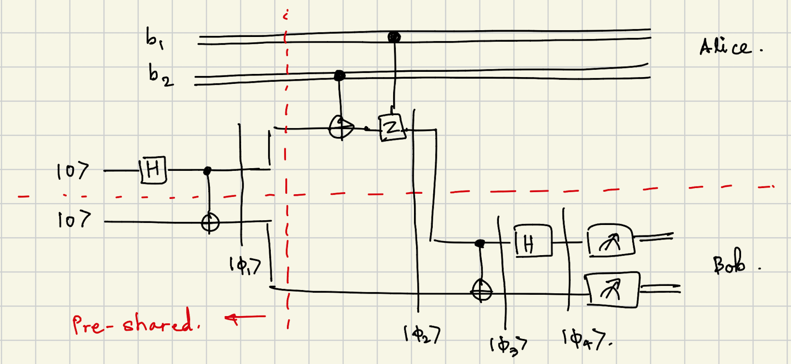
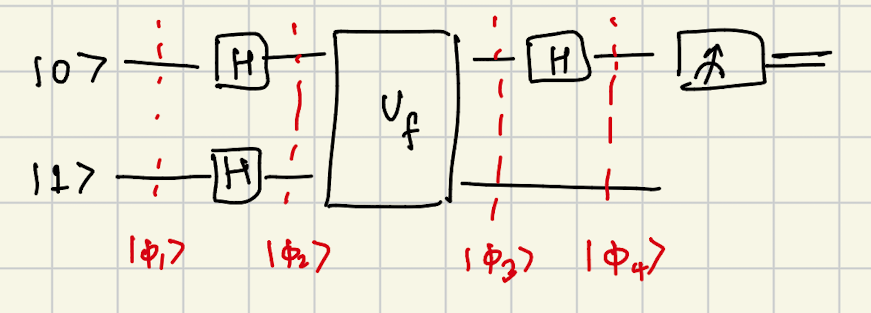
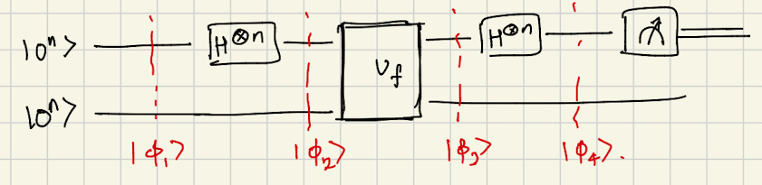

Selected notes from COMS 4281 Introduction to Quantum Computing taught by Prof. Henry Yuen in Fall 2025.
Qubits
A quantum bit (or qubit) is the basic unit of information in quantum computing. Unlike classical bits that are exclusively 0 or 1, a qubit exists in a superposition of both states. However, upon measurement, the qubit collapses to a classical bit value.
Mathematically, a qubit state is represented as: $$|\psi\rangle = \alpha|0\rangle + \beta|1\rangle$$
where $\alpha, \beta \in \mathbb{C}$ are complex amplitudes satisfying $|\alpha|^2 + |\beta|^2 = 1$.
The states $|0\rangle$ and $|1\rangle$ form an orthonormal basis: $$|0\rangle = \begin{pmatrix} 1 \ 0 \end{pmatrix}, \quad |1\rangle = \begin{pmatrix} 0 \ 1 \end{pmatrix}$$
Systems and States
A quantum system $S$ may be in one of $d$ different states, represented as $|0\rangle, |1\rangle, \ldots, |d-1\rangle$.
- Mathematically: $|0\rangle$ is a column vector $[1, 0, \ldots]^T$, and so on
- Transformations: A system may undergo a transformation $R$ denoted as $R|x\rangle$
- Mathematically, $R$ is a matrix
- Composition: $UR|x\rangle$ means apply $R$ first, then $U$
- Reversibility: In quantum computing, all transformations $R$ must be reversible, i.e., $R^{-1}$ must exist such that $RR^{-1} = I$
Composite Systems
Composite systems are formed from two or more individual systems. If systems $S_1$ and $S_2$ combine, the composite system is denoted $S_1 \otimes S_2$.
The state of the composite system is: $$|x_1\rangle \otimes |x_2\rangle$$
This is often abbreviated as: $$|x_1\rangle \otimes |x_2\rangle = |x_1\rangle|x_2\rangle = |x_1, x_2\rangle = |x_1 x_2\rangle$$
Transformations on composite systems: If $R$ is applied to $S_1$ and $U$ is applied to $S_2$, we write: $$(R \otimes U)(|x_1\rangle \otimes |x_2\rangle) = R|x_1\rangle \otimes U|x_2\rangle$$
Some transformations cannot be written as independent transformations on each subsystem. These are entangling operations, such as CNOT.
Measurement
When a qubit in state $|\psi\rangle = \alpha|0\rangle + \beta|1\rangle$ is measured in the computational basis:
- Outcome $|0\rangle$ occurs with probability $|\alpha|^2$
- Outcome $|1\rangle$ occurs with probability $|\beta|^2$
- The state collapses to the measured outcome
Common Quantum Gates
Single-Qubit Gates
Pauli-X (NOT gate): $$X = \begin{pmatrix} 0 & 1 \ 1 & 0 \end{pmatrix}$$
Effect: $X|0\rangle = |1\rangle$, $X|1\rangle = |0\rangle$
Pauli-Z: $$Z = \begin{pmatrix} 1 & 0 \ 0 & -1 \end{pmatrix}$$
Effect: $Z|0\rangle = |0\rangle$, $Z|1\rangle = -|1\rangle$
Hadamard (H): $$H = \frac{1}{\sqrt{2}}\begin{pmatrix} 1 & 1 \ 1 & -1 \end{pmatrix}$$
The Hadamard gate creates superposition: $$\begin{align*} H|0\rangle &= \frac{1}{\sqrt{2}}(|0\rangle + |1\rangle) = |+\rangle \ H|1\rangle &= \frac{1}{\sqrt{2}}(|0\rangle - |1\rangle) = |-\rangle \end{align*}$$
General formula: $$H|a\rangle = \frac{1}{\sqrt{2}}\sum_{b \in {0,1}} (-1)^{a\cdot b}|b\rangle$$
Two-Qubit Gates
CNOT (Controlled-NOT): $$\text{CNOT} = \begin{pmatrix} 1 & 0 & 0 & 0 \ 0 & 1 & 0 & 0 \ 0 & 0 & 0 & 1 \ 0 & 0 & 1 & 0 \end{pmatrix}$$
Effect: Flips the target qubit if the control qubit is $|1\rangle$:
- $\text{CNOT}|00\rangle = |00\rangle$
- $\text{CNOT}|01\rangle = |01\rangle$
- $\text{CNOT}|10\rangle = |11\rangle$
- $\text{CNOT}|11\rangle = |10\rangle$
Partial Measurements in Non-Standard Bases
Measuring in Different Bases
Given a state $|\psi\rangle = \sum_{i,j} \alpha_{ij}|i\rangle|j\rangle$ and a measurement basis $B = {|b_0\rangle, |b_1\rangle, \ldots, |b_d\rangle}$ for the first register.
The projection onto $|b_\ell\rangle$ (not normalized) is: $$|v_\ell\rangle = (|b_\ell\rangle\langle b_\ell| \otimes I)|\psi\rangle = \sum_{i,j} \alpha_{ij}\langle b_\ell|i\rangle |b_\ell\rangle \otimes |j\rangle$$
The probability of measuring $|b_\ell\rangle$ is: $$\Pr[|b_\ell\rangle] = |v_\ell|^2 = \sum_{j}\left|\sum_{i} \alpha_{ij}\langle b_\ell|i\rangle\right|^2$$
The post-measurement state is: $$\frac{|v_\ell\rangle}{||v_\ell||}$$
Example: Measuring in ${|+\rangle, |-\rangle}$ Basis
Given state: $|\psi\rangle = \frac{\sqrt{3}}{2}|00\rangle - \frac{1}{2}|11\rangle$
Measure the first qubit in basis ${|+\rangle, |-\rangle}$ where: $$|0\rangle = \frac{1}{\sqrt{2}}(|+\rangle + |-\rangle), \quad |1\rangle = \frac{1}{\sqrt{2}}(|+\rangle - |-\rangle)$$
Substituting: $$\begin{align*} |\psi\rangle &= \frac{\sqrt{3}}{2\sqrt{2}}(|+\rangle + |-\rangle)|0\rangle - \frac{1}{2\sqrt{2}}(|+\rangle - |-\rangle)|1\rangle \ &= \frac{1}{2\sqrt{2}}\left[\sqrt{3}|+,0\rangle + \sqrt{3}|-,0\rangle - |+,1\rangle + |-,1\rangle\right] \end{align*}$$
Probability of measuring $|+\rangle$: $$\Pr[|+\rangle] = \frac{1}{8}(3 + 1) = \frac{1}{2}$$
Post-measurement state (unnormalized): $$\frac{|v_+\rangle}{||v_+||} = \frac{\frac{\sqrt{3}}{2\sqrt{2}}|+,0\rangle - \frac{1}{2\sqrt{2}}|+,1\rangle}{|\cdot|}$$
Key observation: If qubits are unentangled, measuring one does not affect the other. If entangled, measurement collapses both qubits to correlated states.
Bell States
The four Bell states are maximally entangled two-qubit states:
$$\begin{align*} |\Phi^+\rangle &= \frac{1}{\sqrt{2}}(|00\rangle + |11\rangle) \ |\Phi^-\rangle &= \frac{1}{\sqrt{2}}(|00\rangle - |11\rangle) \ |\Psi^+\rangle &= \frac{1}{\sqrt{2}}(|01\rangle + |10\rangle) \ |\Psi^-\rangle &= \frac{1}{\sqrt{2}}(|01\rangle - |10\rangle) \end{align*}$$
Creating Bell States
Starting with $|\Phi_1\rangle = \frac{1}{\sqrt{2}}(|00\rangle + |11\rangle)$, we can create all four Bell states using two classical bits $b_1, b_2$:
Apply operations based on $b_1$ and $b_2$:
- $b_2 = 0$: No operation on second qubit
- $b_2 = 1$: Apply $X$ (bit flip) on second qubit
- $b_1 = 0$: No operation on first qubit
- $b_1 = 1$: Apply $Z$ (phase flip) on first qubit
Result: $|\Phi_4\rangle = |b_1b_2\rangle$ (encodes both bits into Bell state)
Distinguishing Bell States with CNOT
Given an unknown Bell state, CNOT helps identify which one it is:
| Starting State | After CNOT$_{0\to1}$ |
|---|---|
| $|\Phi^+\rangle$ | $|+\rangle \otimes |0\rangle$ |
| $|\Phi^-\rangle$ | $|-\rangle \otimes |0\rangle$ |
| $|\Psi^+\rangle$ | $|+\rangle \otimes |1\rangle$ |
| $|\Psi^-\rangle$ | $|-\rangle \otimes |1\rangle$ |
Key insight: CNOT on entangled states helps recover information about which Bell state we started with by measuring the second qubit.
Quantum Teleportation
Protocol: Transfer an unknown qubit state $|\psi\rangle = \alpha|0\rangle + \beta|1\rangle$ from Alice to Bob using:
- 1 shared entangled pair (EPR pair)
- 2 classical bits of communication
Circuit

Step-by-Step Evolution
Initial state: $$|\phi_1\rangle = |\psi\rangle \otimes \frac{1}{\sqrt{2}}(|00\rangle + |11\rangle)$$
Expanding $|\psi\rangle = \alpha|0\rangle + \beta|1\rangle$: $$\begin{align*} |\phi_1\rangle &= \frac{1}{\sqrt{2}}[\alpha|000\rangle + \alpha|011\rangle + \beta|100\rangle + \beta|111\rangle] \end{align*}$$
After CNOT$_{0\to1}$: $$\begin{align*} |\phi_2\rangle &= \frac{1}{\sqrt{2}}[\alpha|000\rangle + \alpha|011\rangle + \beta|110\rangle + \beta|101\rangle] \end{align*}$$
After H on first qubit: $$\begin{align*} |\phi_3\rangle &= \frac{1}{2}\Big[|00\rangle(\alpha|0\rangle + \beta|1\rangle) + |01\rangle(\alpha|1\rangle + \beta|0\rangle) \ &\quad\quad + |10\rangle(\alpha|0\rangle - \beta|1\rangle) + |11\rangle(\alpha|1\rangle - \beta|0\rangle)\Big] \end{align*}$$
Measurement Results and Corrections
| Alice measures | Bob’s state | Correction |
|---|---|---|
| $|00\rangle$ | $\alpha|0\rangle + \beta|1\rangle$ | $I$ (none) |
| $|01\rangle$ | $\alpha|1\rangle + \beta|0\rangle$ | $X$ |
| $|10\rangle$ | $\alpha|0\rangle - \beta|1\rangle$ | $Z$ |
| $|11\rangle$ | $\alpha|1\rangle - \beta|0\rangle$ | $ZX$ |
Result: In all cases, after Alice sends her 2 classical bits and Bob applies the appropriate correction, Bob’s qubit becomes $|\psi\rangle$.
Important:
- Bob’s qubit becomes entangled with Alice’s qubits before measurement
- Information about $|\psi\rangle$ is obtained as soon as Alice measures
- However, Bob cannot recover $|\psi\rangle$ without the classical bits (no faster-than-light communication)
Information Theory in Quantum Computing
Amount of Information
An $n$-qubit system is in superposition of $2^n$ states: $$|\psi\rangle = \sum_{x \in {0,1}^n} \alpha_x|x\rangle$$
This appears to perform $2^n$ calculations in parallel, but measurement collapses to a single outcome.
Holevo’s Theorem
Setup:
- Alice has an $m$-bit string $m_x$
- She encodes it into an $n$-qubit quantum state
- Bob performs unitaries + measurement to recover $m_x$
Theorem: $m_x = m_x’$ with high probability only if $n \geq m$.
In other words, you need at least as many qubits as classical bits to reliably transmit information.
Superdense Coding
If Alice and Bob share pre-shared entanglement, then $n = m/2$ qubits is sufficient!
Protocol: Alice can transmit 2 classical bits using 1 qubit + 1 pre-shared EPR pair.
Circuit:

Starting with EPR pair $|\Phi_1\rangle = \frac{1}{\sqrt{2}}(|00\rangle + |11\rangle)$:
-
Alice applies gates based on $(b_1, b_2)$:
- $b_2 = 1$: Apply $\text{CNOT}_{b_2\to0}$
- $b_1 = 1$: Apply $CZ_{b_1\to0}$
-
Result: State becomes one of the four Bell states encoding $b_1b_2$
-
Bob applies CNOT + H to distinguish which Bell state, measuring $|b_1b_2\rangle$
Result: 2 bits transmitted with 1 qubit!
Qubit Rotation
Consider the rotation matrix: $$V_\theta = \begin{pmatrix} \cos\theta & -\sin\theta \ \sin\theta & \cos\theta \end{pmatrix}$$
This rotates a qubit $|\psi\rangle$ by angle $\theta$ about the origin (in the Bloch sphere representation).
Examples
For $|\psi\rangle = |0\rangle$: $$V_\theta|0\rangle = \begin{pmatrix} \cos\theta \ \sin\theta \end{pmatrix}$$
For $|\psi\rangle = |1\rangle$: $$V_\theta|1\rangle = \begin{pmatrix} -\sin\theta \ \cos\theta \end{pmatrix}$$
Rotating Two Qubits Simultaneously
$$\begin{align*} (V_\theta \otimes V_\phi)(|0\rangle \otimes |0\rangle) &= V_\theta|0\rangle \otimes V_\phi|0\rangle \ &= (\cos\theta|0\rangle + \sin\theta|1\rangle) \otimes (\cos\phi|0\rangle + \sin\phi|1\rangle) \ &= \cos\theta\cos\phi|00\rangle + \cos\theta\sin\phi|01\rangle \ &\quad + \sin\theta\cos\phi|10\rangle + \sin\theta\sin\phi|11\rangle \end{align*}$$
Probability that first qubit is $|0\rangle$: $$\begin{align*} \Pr[\text{qubit 0 is } |0\rangle] &= \cos^2\theta\cos^2\phi + \cos^2\theta\sin^2\phi \ &= \cos^2\theta(\cos^2\phi + \sin^2\phi) \ &= \cos^2\theta \end{align*}$$
Application of Rotation: CHSH Game
The CHSH game demonstrates quantum advantage through entanglement.
Game Setup
- Alice receives question $x \in {0,1}$; Bob receives question $y \in {0,1}$
- Alice responds with $a \in {0,1}$; Bob responds with $b \in {0,1}$
- Win condition: $x \land y = a \oplus b$
| $x$ | $y$ | Win if |
|---|---|---|
| 0 | 0 | $a = b$ |
| 0 | 1 | $a = b$ |
| 1 | 0 | $a = b$ |
| 1 | 1 | $a \neq b$ |
Classical strategy: Maximum winning probability is 75%.
Quantum Strategy
Alice and Bob pre-share $|\Phi^+\rangle = \frac{1}{\sqrt{2}}(|00\rangle + |11\rangle)$ and use rotation measurements:
| $x$ | $\theta_A(x)$ | $y$ | $\theta_B(y)$ |
|---|---|---|---|
| 0 | $2\pi/8$ | 0 | $\pi/8$ |
| 1 | $0$ | 1 | $3\pi/8$ |
Analysis for $x=0, y=0$
Final state after applying rotations: $$|\psi\rangle = (V_{2\pi/8} \otimes V_{\pi/8})|\Phi^+\rangle$$
Using the identity: $$\cos(\theta - \phi)(|00\rangle + |11\rangle) + \sin(\theta - \phi)(|10\rangle - |01\rangle)$$
For $\theta = 2\pi/8, \phi = \pi/8$: $$\Pr[\text{qubit 0 is } |0\rangle] = \cos^2(\pi/8) \approx 0.8534$$
Similarly, for $x=1, y=1$: $$\Pr[\text{qubit 0 is } |1\rangle] = \sin^2(\pi/8) = \cos^2(-\pi/8) \approx 0.8534$$
Overall winning probability: $\approx 85.4%$ (beats classical bound!)
Universal Gate Sets
A gate set $\mathcal{G}$ is universal if for any unitary $U$, one can construct a circuit using gates from $\mathcal{G}$ to approximate $U$.
$U$ $\epsilon$-approximates $V$ if for all states $|\psi\rangle$: $$|U|\psi\rangle - V|\psi\rangle| \leq \epsilon$$
Any circuit $C$ without measurements corresponds to some unitary, so a circuit approximates some unitary.
Example 1: Continuous Rotations + Phase Shift
$$\begin{align*} R_x(\theta) &= \begin{pmatrix} \cos\theta & -i\sin\theta \ -i\sin\theta & \cos\theta \end{pmatrix} \[1em] R_y(\theta) &= \begin{pmatrix} \cos\theta & -\sin\theta \ \sin\theta & \cos\theta \end{pmatrix} \[1em] R_z(\theta) &= \begin{pmatrix} e^{-i\theta} & 0 \ 0 & e^{i\theta} \end{pmatrix} \[1em] P(\theta) &= \begin{pmatrix} 1 & 0 \ 0 & e^{i\theta} \end{pmatrix} \end{align*}$$
These must work for all $0 \leq \theta < 2\pi$.
Note: Both examples require at least one 2-qubit gate (CNOT).
Example 2: Discrete + Finite Gates
$$\begin{align*} H &= \frac{1}{\sqrt{2}}\begin{pmatrix} 1 & 1 \ 1 & -1 \end{pmatrix} \[1em] \text{CNOT} &\text{ (2-qubit gate)} \[1em] S &= \begin{pmatrix} 1 & 0 \ 0 & i \end{pmatrix} \[1em] T &= \begin{pmatrix} 1 & 0 \ 0 & e^{i\pi/4} \end{pmatrix} \end{align*}$$
Deutsch’s Algorithm
Problem: Given oracle access to $f: {0,1} \to {0,1}$, decide whether $f(0) = f(1)$.
Classical: Any classical algorithm needs to query $f$ at least 2 times.
Quantum: Deutsch’s algorithm uses only 1 query!
Quantum Oracle
A quantum circuit accesses $f$ through a unitary oracle: $$U_f|x,b\rangle = |x, b \oplus f(x)\rangle$$
Circuit

Analysis
$$\begin{align*} |\phi_1\rangle &= |0\rangle|1\rangle \[0.5em] |\phi_2\rangle &= |+\rangle|-\rangle = \frac{1}{2}(|00\rangle - |01\rangle + |10\rangle - |11\rangle) \end{align*}$$
After $U_f$: $$\begin{align*} |\phi_3\rangle &= \frac{1}{2}[|0,f(0)\rangle - |0,\overline{f(0)}\rangle + |1,f(1)\rangle - |1,\overline{f(1)}\rangle] \end{align*}$$
Using $|b\rangle - |\bar{b}\rangle = (X^b|-\rangle)$: $$|\phi_3\rangle = \frac{1}{\sqrt{2}}(|0\rangle X^{f(0)} + |1\rangle X^{f(1)})|-\rangle$$
After Hadamard on first qubit: $$|\phi_4\rangle = \frac{1}{2}[(|0\rangle + |1\rangle)X^{f(0)} + (|0\rangle - |1\rangle)X^{f(1)}]|-\rangle$$
Result: The first qubit becomes: $$\text{First qubit} = \begin{cases} |0\rangle & \text{if } f(0) = f(1) \text{ (constant function)} \ |1\rangle & \text{if } f(0) \neq f(1) \text{ (balanced function)} \end{cases}$$
Conclusion: Measure the first qubit to distinguish the cases with 1 query!
Phase Kickback
Phase kickback is a key phenomenon where the phase from the target qubit “kicks back” to the control register.
General Principle
For operator $X$ (bit flip), we have: $$|b \oplus c\rangle = X^c|b\rangle$$
Therefore: $$U_f(|b\rangle|a\rangle) = |b\rangle|a \oplus f(b)\rangle = |b\rangle(X^{f(b)}|a\rangle)$$
By linearity, this holds for all quantum states $|\psi\rangle = \sum_i |i\rangle$: $$U_f(|b\rangle|\psi\rangle) = |b\rangle(X^{f(b)}|\psi\rangle)$$
Application in Deutsch’s Algorithm
In Deutsch’s problem with target qubit in $|-\rangle$ state: $$\begin{align*} U_f(|+\rangle|-\rangle) &= \frac{1}{\sqrt{2}}[U_f(|0\rangle|-\rangle) + U_f(|1\rangle|-\rangle)] \ &= \frac{1}{\sqrt{2}}[|0\rangle X^{f(0)}|-\rangle + |1\rangle X^{f(1)}|-\rangle] \end{align*}$$
Since $X|-\rangle = -|-\rangle$ and $X|+\rangle = |+\rangle$: $$\begin{align*} X^0|-\rangle &= |-\rangle \ X^1|-\rangle &= -|-\rangle \end{align*}$$
Thus the global phase depends on $f$, creating the interference needed for the algorithm.
Hadamard Transform on Multiple Qubits
Single Qubit Formula
$$H|a\rangle = \frac{1}{\sqrt{2}}\sum_{b \in {0,1}} (-1)^{ab}|b\rangle$$
Multi-Qubit Hadamard
Applying $H$ to each qubit in an $n$-qubit state: $$\begin{align*} H^{\otimes n}|x_0\ldots x_{n-1}\rangle &= H|x_0\rangle \otimes H|x_1\rangle \otimes \cdots \otimes H|x_{n-1}\rangle \ &= \left(\frac{1}{\sqrt{2}}\sum_{b_0}(-1)^{x_0 b_0}|b_0\rangle\right) \otimes \left(\frac{1}{\sqrt{2}}\sum_{b_1}(-1)^{x_1 b_1}|b_1\rangle\right) \otimes \cdots \ &= \frac{1}{\sqrt{2^n}}\sum_{y \in {0,1}^n} (-1)^{x \cdot y}|y\rangle \end{align*}$$
where $x \cdot y = x_0y_0 \oplus x_1y_1 \oplus \cdots \oplus x_{n-1}y_{n-1}$ (bitwise inner product).
Key Result
$$H^{\otimes n}|x\rangle = \frac{1}{\sqrt{2^n}}\sum_{y \in {0,1}^n} (-1)^{x \cdot y}|y\rangle$$
This creates an equal superposition over all $2^n$ basis states, with phases determined by $x \cdot y$.
Simons’ Algorithm
Problem: Given oracle access to $f: {0,1}^n \to {0,1}^n$, there exists $s \in {0,1}^n$ such that: $$f(x) = f(y) \iff x \oplus y = s$$
Find the hidden string $s$.
Classical complexity: $O(2^{n/2})$ queries by birthday paradox.
Quantum complexity: $O(n)$ queries using Simons’ algorithm!
Simons’ Quantum Subroutine
Circuit queries $U_f$ once and uniformly samples $y \in {0,1}^n$ such that $s \cdot y = 0$.

Analysis
$$\begin{align*} |\phi_1\rangle &= |0^n\rangle \otimes |0^n\rangle \[0.5em] |\phi_2\rangle &= \left(\frac{1}{\sqrt{2^n}}\sum_{x \in {0,1}^n}|x\rangle\right) \otimes |0^n\rangle \end{align*}$$
After $U_f$: $$\begin{align*} |\phi_3\rangle &= \frac{1}{\sqrt{2^n}}\sum_{x \in {0,1}^n}|x\rangle \otimes |f(x)\rangle \end{align*}$$
Suppose we measure the second register and get outcome $a$. The first register collapses to an equal superposition of all $x$ such that $f(x) = a$.
By the promise, there are exactly two such values: $x_a$ and $x_a \oplus s$. Thus: $$\frac{1}{\sqrt{2}}(|x_a\rangle + |x_a \oplus s\rangle) \otimes |a\rangle$$
After applying $H^{\otimes n}$ to the first register: $$\begin{align*} |\phi_4\rangle &= \frac{1}{\sqrt{2^{n+1}}}\sum_{y \in {0,1}^n}\left[(-1)^{x_a \cdot y} + (-1)^{(x_a \oplus s) \cdot y}\right]|y\rangle|a\rangle \end{align*}$$
Using $(x_a \oplus s) \cdot y = x_a \cdot y \oplus s \cdot y$: $$\begin{align*} |\phi_4\rangle &= \frac{1}{\sqrt{2^{n+1}}}\sum_{y \in {0,1}^n}(-1)^{x_a \cdot y}\left[1 + (-1)^{s \cdot y}\right]|y\rangle|a\rangle \end{align*}$$
Key observation: The coefficient $1 + (-1)^{s \cdot y}$ determines amplitude: $$1 + (-1)^{s \cdot y} = \begin{cases} 2 & \text{if } s \cdot y = 0 \text{ (constructive interference)} \ 0 & \text{if } s \cdot y = 1 \text{ (destructive interference)} \end{cases}$$
Therefore, measuring $y$ gives a uniformly random $y$ such that $s \cdot y = 0$.
Classical Post-Processing
After obtaining $m = O(n)$ samples $y^{(1)}, y^{(2)}, \ldots, y^{(m)}$, solve the system: $$\begin{align*} y^{(1)} \cdot s &= 0 \ y^{(2)} \cdot s &= 0 \ &\vdots \ y^{(m)} \cdot s &= 0 \end{align*}$$
This is a system of linear equations over $\mathbb{F}_2$ (binary field), solvable using Gaussian elimination in $O(n^3)$ time.
Result: Simons’ algorithm finds $s$ in polynomial time, demonstrating exponential quantum speedup!
Further Topics
TBD:
- Quantum Fourier Transform
- Quantum Phase Estimation
- Shor’s Factoring Algorithm
- Grover’s Search and Quantum Counting
- Quantum Error Correction
- Quantum Complexity Theory